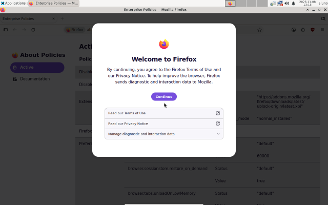
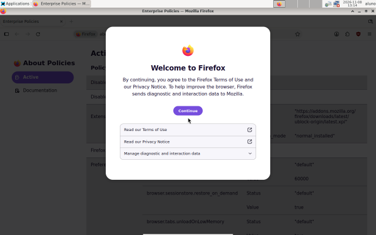
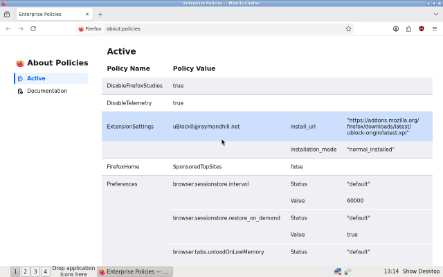
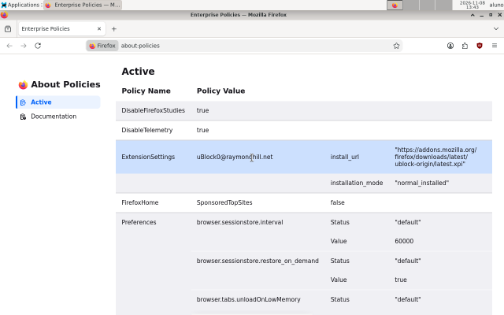

Por que bloquear anúncios?
Numa página de notícias comum, os anúncios e os rastreadores são boa parte do que é baixado e do processador gasto. Bloqueados, a página carrega mais rápido, gasta menos memória e fica mais segura.
Deixa o Firefox mais leve, com o bloqueador de anúncios uBlock Origin e sem telemetria nem atalhos patrocinados.
desktop/navegador-leve
Risco baixo
Pede a senha de administrador
Testada em máquina virtual no Ubuntu e no Debian
Em resumo
about:config.policies.json que já existia: só acrescenta.Passo a passo
As mesmas quatro etapas de toda receita, com o que esta confere em cada uma.
Confere se /etc/firefox/policies/policies.json já tem cada política e preferência da receita, com os mesmos valores. Se tiver, pula a receita.
Confere que o arquivo é um JSON válido, que tem todas as políticas e preferências da receita e, com bloquear_anuncios, o uBlock Origin.
Volta o policies.json ao que era, ou apaga, se foi a receita que criou. O uBlock Origin, se já tiver sido instalado, fica como uma extensão comum, que você remove em about:addons.
No terminal
A saída de um teste no Ubuntu 26.04.
Os porquês
Numa página de notícias comum, os anúncios e os rastreadores são boa parte do que é baixado e do processador gasto. Bloqueados, a página carrega mais rápido, gasta menos memória e fica mais segura.
Ele já vem no Ubuntu, no Mint e no Debian, então nada muda para quem usa. E é dos poucos em que o uBlock Origin completo ainda funciona: nos navegadores baseados no Chromium, só a versão limitada.
O uBlock Origin precisa de atualizações frequentes para acompanhar os sites. Pela loja oficial da Mozilla, ele se atualiza sozinho, no Firefox do Snap e no do apt. O pacote do Debian demora a chegar e não serve para o Snap.
É o jeito oficial de configurar o Firefox para o computador todo, para todas as pessoas, sem mexer no perfil de ninguém. Em about:policies, o próprio Firefox mostra o que está valendo.
Como
bloquear_anuncios, instalado pelo próprio Firefox na primeira vez que ele abrir.Parâmetros
| Parâmetro | Padrão | O que é |
|---|---|---|
bloquear_anuncios | sim | Instalar o bloqueador de anúncios uBlock Origin no Firefox? |
No menu, o bora pergunta o que precisa. Num script ou num agente, passe os parâmetros na linha de comando:bora plano --receitas desktop/navegador-leve -p desktop/navegador-leve.bloquear_anuncios=nao
Confira você mesmo
No Firefox, digite na barra de endereços:
about:policiesLista as políticas ativas e mostra se alguma tem erro.about:addonsMostra o uBlock Origin, depois da primeira abertura.about:unloadsMostra as abas na ordem em que o Firefox descarrega quando a memória acaba.about:processesMostra quanta memória e processador cada aba está usando.Onde funciona
| Distro | Onde | Data | Resultado |
|---|---|---|---|
| Ubuntu 26.04 | Contêiner (teste automático) | 06/11/2026 | Passou |
| Ubuntu 24.04 | Contêiner (teste automático) | 06/11/2026 | Passou |
| Debian 13 | Contêiner (teste automático) | 06/11/2026 | Passou |
| Debian 13 | Máquina virtual | 08/11/2026 | Passou |
| Ubuntu 24.04 | Máquina virtual | 08/11/2026 | Passou |
| Ubuntu 26.04 | Máquina virtual | 08/11/2026 | Passou |
Testada em contêiner quer dizer que a receita passou nos testes automáticos dessa família, que rodam num contêiner a cada pull request, sem kernel, disco nem tela de login de verdade. Testada em VM quer dizer que, além disso, ela foi aplicada, conferida e desfeita numa máquina virtual (VM) de verdade, o que o CI faz toda semana; o registro acima mostra a última vez de cada distro. Enquanto uma receita só tem o teste em contêiner, o bora avisa quando monta o plano. Testar numa máquina sua é uma das ajudas mais valiosas.




Capturas de verdade do teste automático com tela, que roda toda semana. Elas são trocadas quando o registro de testes muda, no máximo uma vez por mês.
Onde ela entra
Fontes
Bora melhorar
Os pedidos viram issues no GitHub, onde qualquer pessoa pode comentar, votar com um 👍 ou se oferecer para fazer.
Uma opção nova, um comportamento diferente ou algo que esta receita ainda não faz.
Fazer um pedidoUsa Fedora, Arch ou outra família? Diga qual, e conte se puder testar.
Pedir outra distroUma mudança que o bora ainda não sabe fazer, dentro deste rolê ou fora dele.
Pedir uma receitaAlgo não funcionou como esta página diz? O formulário já vem com o roteiro.
RelatarFicou confuso? Sugira um jeito melhor de dizer, direto no arquivo.
Ver no GitHub